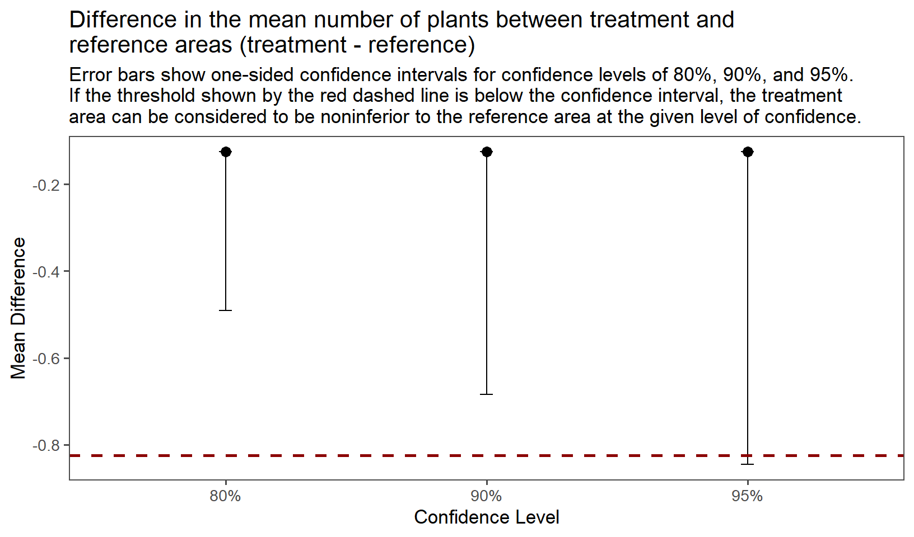
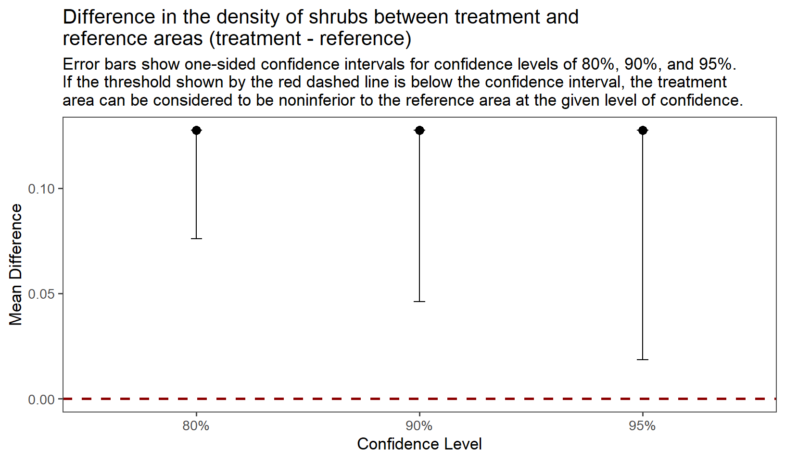
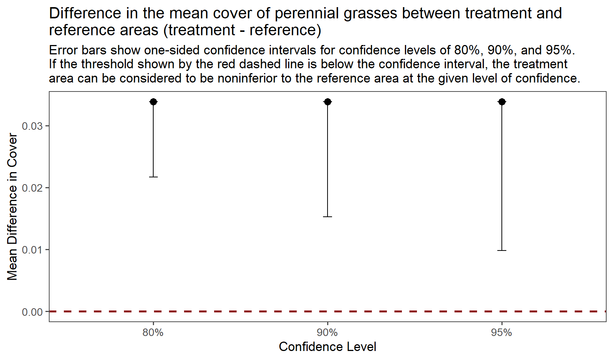
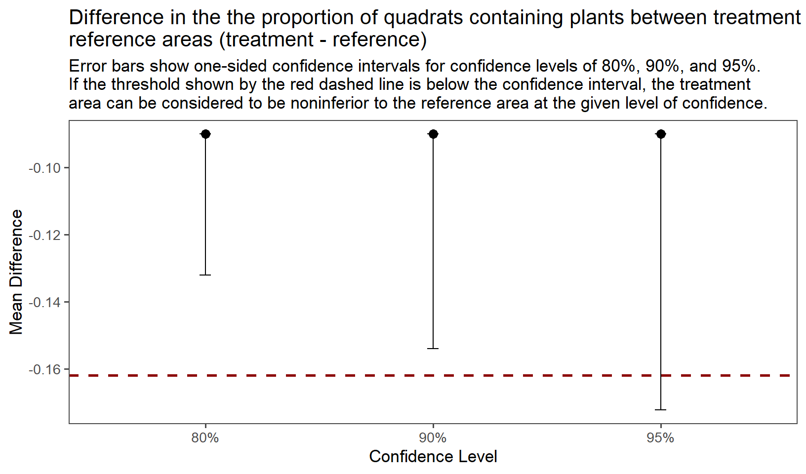

library(tidyverse) # loads ggplot, dplyr, and several other tidy packages
library(ggthemes) # to use theme_few in ggplot
library(here) # to tell R where to find data files in project folderTesting for the non-inferiority of a restored area to a reference area
Introduction
A common monitoring problem relates to mitigation following some disturbance. For example, a natural gas company disturbs a long, linear swath of land in order to build a pipeline and is then charged with restoring the disturbed area following completion of the pipeline construction. Or an oil extraction company must mitigate for the disturbance associated with drilling by restoring natural vegetation on well pads once extraction is complete. In both cases, the company involved would likely apply seeds or other plant materials to the disturbed sites in order to restore them. Either the company or regulating agency would then perform monitoring to assure the company has achieved success as defined by the regulating agency.
The excellent book by Bryan Manly (2008) devotes a chapter to this issue. He refers to the types of tests that will be discussed here as tests of bioequivalence. These tests are common in the pharmaceutical industry where they are used to assess whether a new drug is as good (bioequivalent) to an existing but possibly more expensive or dangerous drug.
“Bioequivalence” in comparing drugs often involves a two-sided test. You want the new drug to be almost as good or slightly better than the existing drug, and you set a lower and upper threshold within which the effects of the new drug must fall. In a restoration context the test will always be one-sided. You want the restored area to be almost as good as a reference area but you don’t care if it’s better (and, in most real-life situations, it will never be better, at least in time frames meaningful to management). Such a one-sided bioequivalence test is often referred to as a non-inferiority test, and that is the term we will use to describe it here.
Why a traditional statistical test doesn’t work well in this situation
The null and alternative hypotheses are typically set up as follows for a normal two-sided statistical test (e.g., a t test):
\({H_0}:{\rm{ The\: means\: of\: the\: two \:populations \:are \:the \:same\: (treatment \:mean = reference \:mean)}}\)
\({H_A}:{\rm{ The\: means\: of\: the\: two \:populations \:are \:different \: (treatment \:mean <> reference \:mean)}}\)
As Manly points out there are two problems with setting up the hypotheses in this way for a situation where the objective is to determine if a site has achieved a sufficient level of restoration as specified by a regulatory agency. The first is that the null hypothesis in hypothesis testing is really a straw man. No two sites would ever be exactly the same even in the absence of any disturbance, despite substantial effort to ensure the sites are paired in terms of slope, aspect, soil type, vegetation, etc. Because of this, a monitoring design with high power to detect change could reject the null hypothesis that the two populations are the same, leading to the conclusion that the company has failed to achieve the restoration objective, despite the fact that the treated area is, for all practical purposes, restored.
The second problem with the traditional null and alternative hypotheses is more common. A monitoring design with low power to detect change would likely fail to reject the null hypothesis, with the result that the company can claim reclamation success even in situations where it is obvious to an observer that success has not in fact been achieved.
Shifting the burden of proof
A non-inferiority or bioequivalence test solves both of the problems associated with the traditional two-sided test. Most important is that such a test shifts the burden of proof. Now, instead of having to prove that the two sites are different (with a non-significant result leading to the conclusion that the two sites are the same), the company has to prove that the two sites are the “same” (with “same” here being defined in terms of the treatment site being within some specified distance from the reference site in whatever attribute is being measured). Although, for reasons discussed below, we won’t be using a two-sided bioequivalence test in assessing restoration success, looking at the change in the null and alternative hypotheses in a two-sided bioequivalence test allows for a meaningful comparison with the traditional two-sided hypotheses above. For a bioequivalence test the hypotheses are now:
\({H_0}:{\rm{ The\: means\: of\: the\: two \:populations \:are \:different\: (treatment \:mean <> reference \:mean),}}\)
\({H_A}:{\rm{ The\: means\: of\: the\: two \:populations \:are \:the \:same\: (treatment \:mean = reference \:mean)}}\)
“Same” as used for \({H_A}\) is defined as the treatment mean being within some specified distance from the reference mean. Like before, a low-powered monitoring design will likely fail to reject the null hypothesis, but now the failure to reject means the company must conclude that success has not been achieved.
The bioequivalence test corresponding to the null and alternative hypotheses above is a two-sided test. A non-inferiority test is a one-sided test, which starts with the following two hypotheses:
\({H_0}:{\rm{ The\: treatment \:mean\ \le reference \:mean),}}\)
\({H_A}:{\rm{ The\:treatment \:mean > reference \:mean)}}\)
In a restoration context (or in any non-inferiority test) it is unreasonable to use the two hypotheses immediately above, because it is highly unlikely the treatment mean would ever be greater than the reference mean and, even if it were, unless it was quite a bit greater the test would be unable to detect the difference within reasonable levels of sampling. It thus becomes necessary to set some threshold beyond which the mean of the treatment population will be considered to be equivalent to the mean of the reference population. So, for example, we might say that success will be declared if the mean of the treatment area is at least 80 percent (or 0.8) of the mean of the reference population. The null and alternative hypotheses then become:
\({H_0}:{\rm{ The\: treatment \:mean\ \le 0.8(reference \:mean)}}\)
\({H_A}:{\rm{ The\:treatment \:mean > 0.8(reference \:mean)}}\)
When the non-inferiority test is conducted, a calculated p value < the threshold p value (alpha) from a sampling objective results in rejection of \({H_0}\) in favor of \({H_A}\), meaning that we conclude that the restoration has been successful. A calculated p value > the threshold p value results in a failure to reject \({H_0}\) and the conclusion that restoration has not been successful. Note that comparing a treatment mean to a reference mean must involve sampling of both the treatment mean and reference mean in the same year. It may be tempting to think that sampling of the reference area needs to occur only once and that all subsequent sampling need only occur on the treatment area until the time a statistical test results in rejection of the null hypothesis. This, however, ignores the temporal variability inherent in all natural systems. Suppose one is comparing the density of particular plants between the treatment and reference areas. Density can be greatly affected by yearly weather variability, particularly if one does not distinguish between seedlings and adult plants (or if total density includes annual plants). If sampling in the reference area occurred in a higher than normal rainfall year and a threshold mean density were based on the result of this sampling (e.g., the treatment area would have to have 0.8 of the mean density of the reference area) then subsequent sampling of the treatment area alone in poorer rainfall years might result in a failure to declare success even when it might have occurred (i.e., if one had actually sampled the reference area one would have found that the mean density in the reference area was far less than the mean in the better rainfall year and much closer to the treatment mean). The reverse could happen if the reference area were sampled in a poor rainfall year. The bottom line is that both the treatment area and the reference area must be sampled in each year that sampling occurs.
Note the nature of the null and alternative hypotheses for the non-inferiority test. Failure to reject the null hypothesis means that the treatment mean is less than or equal to some proportion of the reference mean. Thus, it is important to set as a success criterion that the mean of the treatment area be greater than the mean of the reference area. Alternatively, if the threshold for success is set to be at least 80% of the mean of the reference area, then the null and alternative hypotheses should use 79%, i.e., \({H_0}\) is that the treatment mean ≤ 0.79(reference mean) and \({H_A}\) is that the treatment mean > 0.79(reference mean).
Don’t even sample until the possibility exists that the treatment area is close to the reference area in whatever attribute is being measured
Whenever a quantitative threshold of success is set there seems to be a tendency for regulatory agencies and/or industry consultants to think that quantitative monitoring must begin immediately. But in a restoration context, at least in the western United States, it is impossible for a treatment area to reach the threshold of success for the first few years after seeding/planting. Therefore, it is a waste of time and money to begin sampling to determine if the threshold has been met. Simple observations and photographs should suffice until it appears likely, or at least possible, the treatment area is above the threshold. It may be appropriate to direct quantitative monitoring at other aspects of the restoration project. For example, it is important to determine the success of the seeding or other planting in terms of numbers of germinating and establishing plants. One may wish, therefore, to count or otherwise assess the number of seeded/planted plants growing in the treatment area either through sampling or—where possible—through a complete census. This type of monitoring, though important, is not the type of monitoring that is the topic of this discussion.
It may be desirable to set more than one success threshold at different times during the restoration process. Thus, you might decide to set the threshold at, say, 50% after some number of years and then move the threshold up to some higher number, say 75%, after some number of subsequent years.
Don’t set the success criterion too high
Because the restoration is important to you, it may be tempting to set the final success criteria high. For example you may be tempted to set the threshold at 90%, 95%, or even 100% of the mean of the reference area. Recognize that because the null hypothesis must be rejected to claim success, the treatment area sample mean will always have to be somewhat higher than the threshold in order for this rejection to occur. If the success threshold is set at 80%, the treatment sample mean will often have to be 85% or even 90% or more of the reference mean in order for the null hypothesis to be rejected at reasonable levels of sampling. Thus, setting the threshold higher than 80% is probably too rigorous and unreasonable in the real world. Even 80% may be too high in many situations. Think about the actual level of restoration that is reasonable to expect over the time frame involved for the vegetation type and climate you are dealing with. Realize, too, that as long as you are using a non-inferiority test, the true population mean of the treatment area is likely to be higher than the selected threshold when the non-inferiority test yields a significant result.
Paired versus unpaired non-inferiority tests
Certain restoration projects call for a monitoring design involving paired sampling units and a paired non-inferiority test, while others require independent sampling units and an unpaired non-inferiority test. The pipeline example mentioned in the first paragraph is an example of a restoration project that would greatly benefit from a paired design. Because such linear projects typically cross many different vegetation types, elevations, and rainfall zones, it would be very inefficient to take independent samples from treatment and reference areas. Instead, a plot at one point in the treated area corridor should be paired with another plot in the reference area immediately adjacent to it, and this process should continue along the pipeline corridor until a sample of paired plots is taken. The data are then analyzed using a paired non-inferiority test.
Other restoration projects may not lead to the type of natural pairing provided by a linear project like a pipeline. The well pad example discussed above may be an example of this. Well pads are typically square or circular in area and while it might be possible to pair plots near the outside of the well pad with plots in the surrounding reference area near to each of the outer well pad plots, plots falling in the interior of the well pad may be too far away from the surrounding reference area to be successfully paired with reference plots. There may also be issues with the adjacent reference area. It may be, because of different vegetation types or levels of disturbance, that the only logical reference area to use is adjacent to the treated area on one side only. Or it may also be the case that the vegetation, soil type, aspect, etc., in the reference area is relatively homogeneous and similar to the vegetation that used to be in the treated area which was also homogeneous, so pairing is considered unnecessary. Whatever the reason, if sampling units between the treated and reference areas are unpaired, the two samples are independent and an unpaired non-inferiority test should be used.
Despite the availability of an unpaired non-inferiority test, in a restoration context it will almost always be advantageous to use a paired sampling design if one can be justified. One option is to take a random sample of plots in the treatment area and then pair each treatment plot with a plot in the reference area based on soil, aspect, slope, etc. The pairing does not have to be perfect, though the less perfect it is the less the positive correlation between pairs of sampling units and the less advantageous the paired design. From a statistical testing perspective you can always use a paired test even on data that are really not paired, though the paired test in this situation will be less powerful than an unpaired test because of a loss of degrees of freedom. The reverse, however, is not true. You cannot use an unpaired test on data that are paired—the results of such a test will not be valid.
Non-inferiority tests on continuous and binomial data.
“Continuous data” as used here refers to both integers (whole numbers) or real numbers (numbers that can have decimals) to distinguish between this type of data and binomial data, which consist only of 0’s and 1’s. Continuous data as defined here consists of counts of a particular species or attribute or measurements such as estimates of cover, heights, or biomass. The use of quadrats to estimate the frequency of occurrence of a particular species is an example of binomial data. The frequency of the species is estimated by dividing the number of quadrats containing the species by the total number of quadrats sampled. Another example is the use of point intercept sampling to estimate the cover of a particular plant or attribute. Cover is estimated by dividing the number of points that hit the plant/attribute of interest by the total number of sampled points.
In the examples below a t test is used to determine the non-inferiority of the means of samples consisting of continuous data as well as the non-inferiority of two proportions derived from binomial data. Although a chi-square test is often used to analyze binomial data, D’Agostino, Chase, and Belanger (1988) show that a t test on the two binomial samples works equally well. The t.test() function has the advantage of allowing the user to specify a true mean difference (mu) other than 0, which is helpful for our purposes here.
Both paired and unpaired t tests are demonstrated for analyzing continuous data, but only an independent-sample (unpaired) test is provided for binomial data. This is because it is unlikely that binomial samples would be paired. It is impractical to try to pair point intercepts, and the large sample sizes required for binomial data (at least 100 and often many more than this) make it unlikely that frequency quadrats would be paired.
If point intercepts or frequency quadrats are arrayed along transects and the transects (rather than the points or quadrats) are treated as the sampling units, then it may make sense to pair the transects. In this case, however, the data are no longer binomial and the difference in transect values between the treatment and reference areas can be analyzed using the paired t test for continuous data.
Unpaired (independent) continuous data.
Load needed packages
To run the code, download the zip file containing the necessary files into a directory you’ve created on your computer, and then in RStudio select File/Open Project, navigate to the folder into which you’ve unzipped the project files, and click on non-inferiority-tests.Rproj. Be sure to retain the directory structure. The quarto file (noninferiority tests.qmd) and the references.bib file should be in the same directory as non-inferiority-tests.Rproj, and the four data (*.csv) files should be in subdirectory /data.
Data were derived through independent random samples of the treatment and control areas.
Load the example data set. These are independent samples of counts of a particular plant species in both the treatment and reference areas. Note the data are in long format with the number of plants for each quadrat in the variable “Count” and the variable “Area” specifying whether the quadrat comes from either the Treatment or Reference area.
my_data <- read_csv(here("data/unpaired restoration data.csv"))
head(my_data)# A tibble: 6 × 3
Quadrat Area Count
<dbl> <chr> <dbl>
1 1 Reference 2
2 2 Reference 0
3 3 Reference 3
4 4 Reference 6
5 5 Reference 0
6 6 Reference 1tail(my_data)# A tibble: 6 × 3
Quadrat Area Count
<dbl> <chr> <dbl>
1 35 Treatment 8
2 36 Treatment 2
3 37 Treatment 2
4 38 Treatment 4
5 39 Treatment 2
6 40 Treatment 5Enter the required similarity of treatment area to the reference area as a proportion (e.g., if the treatment area is required to be 75% similar you assign 0.75 to prop_sim, below).
prop_sim <- 0.75Set the threshold in absolute units for the lowest difference for which the confidence interval for the treated area must be above in order to declare significance. This is calculated by multiplying 1-prop.sim by the mean of the reference area and making this value negative. Thus, the confidence interval around the mean difference must be greater than the threshold at the given confidence level in order for the treatment area to be considered noninferior.
# Pull out reference data only in order to calculate the threshold value (which requires taking the mean of the reference quadrat counts).
ref_data <- my_data |>
filter(Area == "Reference")
# Now calculate the threshold value and make it negative.
threshold <- -(1 - prop_sim) * mean(ref_data$Count)Enter the alpha value for the desired confidence interval, e.g. for a 90% confidence interval enter alpha = 0.10. This is also the threshold p (alpha) value for concluding the treatment area is non-inferior to the reference area. For example, if alpha = 0.10, then a calculated p value < 0.10 would be evidence for accepting the alternative hypothesis that the treatment area is non-inferior to the reference area.
alpha <- 0.1Run a t-test to determine if the treatment is noninferior to the reference area. A p value less than the threshold p value (alpha) is evidence to accept the alternative hypothesis that the treatment area is not inferior to the reference area. Equivalently, if the lower bound of the (1-alpha) confidence interval is larger than the threshold, there is evidence to reject the null hypothesis that the treatment area is inferior to the reference area and accept the alternative hypothesis that the treatment area is not inferior to the reference area.
It’s important to note that the “Area” variable given to the t.test() function below must have the estimate the mean of the Treatment quadrats before the mean of the Reference quadrats. If we don’t tell R the proper order (Treatment, then Reference), we’ll get an incorrect result because R will see that Reference comes before Treatment alphabetically. We tell R to put Treatment first by making Area a factor and using the “levels =” argument to tell R the order to use.
my_data$Area = factor(my_data$Area, levels = c("Treatment", "Reference"))Now when we run t.test(), R puts the areas in the proper order and we get the correct result.
t.test(Count ~ Area, data = my_data, mu = threshold, alternative = "greater", conf.level = (1 - alpha))
Welch Two Sample t-test
data: Count by Area
t = 1.6175, df = 77.659, p-value = 0.05491
alternative hypothesis: true difference in means between group Treatment and group Reference is greater than -0.825
90 percent confidence interval:
-0.6843787 Inf
sample estimates:
mean in group Treatment mean in group Reference
3.175 3.300 The t test (a non-inferiority test in the way we’ve set it up) yields a p value of 0.055, which is less than our desired alpha value of 0.1. We therefore reject the null hypothesis in favor of the alternative hypothesis that the treatment area mean is greater than 0.75 of the reference area mean.
Graph the results
Note that the graph shows one-tailed confidence intervals for three confidence levels, 0.80, 0.90, and 0.95. This is for heuristic purposes only. The alpha level for significance should be chosen before the sampling is done.
Convert to wide format and summarize the data.
my_data_wide <- my_data |>
pivot_wider(names_from = Area,
values_from = Count)
my_data_summ <- my_data_wide |>
summarize(mean_trt = mean(Treatment),
mean_ref = mean(Reference),
mean_diff = mean_trt - mean_ref,
sd_trt = sd(Treatment),
sd_ref = sd(Reference),
n_trt = length(Treatment),
n_ref = length(Reference),
se_diff = sqrt((sd_trt^2/n_trt) + sd_ref^2/n_ref),
LCL80 = mean_diff - (se_diff * qt(0.2,
lower.tail = FALSE,
df = n_trt + n_ref - 2)),
LCL90 = mean_diff - (se_diff * qt(0.1,
lower.tail = FALSE,
df = n_trt + n_ref - 2)),
LCL95 = mean_diff - (se_diff * qt(0.05,
lower.tail = FALSE,
df = n_trt + n_ref - 2)))
# Remove all but mean_diff and LCL80, LCL90, and LCL95
my_data_summ2 <- my_data_summ |>
select(mean_diff, LCL80, LCL90, LCL95)
# Convert to long format for plotting
my_data_summ2_long <- my_data_summ2 |>
pivot_longer(cols = starts_with("LCL"),
names_to = "CI",
values_to = "lowerCI")
ggplot(my_data_summ2_long, aes(x = CI, y = mean_diff)) +
theme_few(base_size = 13) +
geom_point(size = 3) +
geom_errorbar(aes(ymin = lowerCI, ymax = mean_diff, width = .05)) +
geom_hline(yintercept = threshold, lty = "dashed", color = "darkred",
linewidth = 1) +
ylab("Mean Difference") +
xlab("Confidence Level") +
scale_x_discrete(labels = c("80%", "90%", "95%")) +
ggtitle("Difference in the mean number of plants between treatment and \nreference areas (treatment - reference)",
subtitle = "Error bars show one-sided confidence intervals for confidence levels of 80%, 90%, and 95%.\nIf the threshold shown by the red dashed line is below the confidence interval, the treatment \narea can be considered to be noninferior to the reference area at the given level of confidence.")
The one-sided confidence intervals for 80% and 90% confidence levels are both above the threshold difference value, so if we had chosen (before sampling) either an alpha of 0.2 or an alpha of 0.1, we would conclude we had met the standard for non-inferiority. Had we, on the other hand, chosen an alpha of 0.05, we would conclude we have not met that standard because the threshold difference is included inside the confidence interval. Note the relationship between the 95% confidence interval here and the calculated p value from the t test above. Because the calculated p value is 0.055, it makes sense that the 95% confidence interval would include the threshold.
Example 1 (from Manly 2008)
Load the data set. Note that data are in wide format, with separate columns for the “Reference” and “Treatment” variables.
paired_data1 <- read_csv(here("data/Manly paired restoration data.csv"))Rows: 8 Columns: 2
── Column specification ────────────────────────────────────────────────────────
Delimiter: ","
dbl (2): Reference, Treatment
ℹ Use `spec()` to retrieve the full column specification for this data.
ℹ Specify the column types or set `show_col_types = FALSE` to quiet this message.Specify the required similarity of the treatment area to the reference area in prop_._sim2 below.
prop_sim2 <- 0.8The similarity proportion entered into prop.sim2 above is used to calculate Z scores for each pair of plots. The Z score for each pair is calculated as follows:
\[ \begin{array}{l}Z = valu{e_{trt}} - (prop.sim2*valu{e_{ref}})\\{\rm{where:}}\\valu{e_{trt}} = {\rm{value \:of\: treatment\: plot}}\\valu{e_{ref}} = {\rm{value\: of \:reference\: plot}}\\prop.sim2 = {\rm{the \:proportion \:similarity \:entered \:in\: prop}}{\rm{.sim2}}\end{array} \]
Note that the adjusted reference values (Z) are subtracted from the treatment values. The null hypothesis is therefore that the mean of the treatment values is less than or equal to the mean of the adjusted reference values, in which case we would conclude the treatment has not been shown to be non-inferior to the reference. If we reject this null hypothesis we then conclude the treatment has been shown to be non-inferior to the reference area.
To determine this we conduct a one-tailed, one-sample t test to see whether the mean of Z is sufficiently larger than 0. Note that a one sample t test on the differences between pairs of plots is equivalent to a paired-sample t test on the pairs of plot values. Also note that we don’t specify a confidence level for the t.test() function, accepting the default argument of conf.level = 0.95. This assumes our desired alpha level for significance is 0.05.
# Create a new object paired_data2 which adds the variable Z calculated from paired-data1.
paired_data2 <- paired_data1 |>
mutate(Z = Treatment - (prop_sim2 * Reference))
# Conduct the one-sample t test on the variable Z. The alternative = "greater" argument makes the test one-tailed.
t.test(paired_data2$Z, alternative = "greater")
One Sample t-test
data: paired_data2$Z
t = 2.2145, df = 7, p-value = 0.03119
alternative hypothesis: true mean is greater than 0
95 percent confidence interval:
0.01841826 Inf
sample estimates:
mean of x
0.1275 In the example given by Manly (2008) the proportion of similarity used was 0.8. If we enter 0.8 under prop.sim2 above, the t test run above yields a t value of 2.2145 and a p value of 0.031, leading us to conclude the treatment area is non-inferior to the reference area at an alpha of 0.05.
Graph of the results for the paired sample data from Manly.
# Summarize the data
paired_summ <- paired_data2 |>
summarize(mean_Z = mean(Z),
n_Z = length(Z),
se_Z = sd(Z)/sqrt(n_Z),
LCL80 = se_Z * qt(0.2, lower.tail = FALSE,
df = n_Z - 1),
LCL90 = se_Z * qt(0.1, lower.tail = FALSE,
df = n_Z - 1),
LCL95 = se_Z * qt(0.05, lower.tail = FALSE,
df = n_Z - 1))
# Remove all but mean_Z and LCL80, LCL90, and LCL95
paired_summ2 <- paired_summ |>
select(mean_Z, LCL80, LCL90, LCL95)
# Convert to long format for plotting
paired_summ2_long <- paired_summ2 |>
pivot_longer(cols = starts_with("LCL"),
names_to = "CI_level",
values_to = "CI_value")
ggplot(paired_summ2_long, aes(x = CI_level, y = mean_Z)) +
theme_few(base_size = 13) +
geom_point(size = 3) +
geom_errorbar(aes(ymin = mean_Z - CI_value, ymax = mean_Z, width = .05)) +
geom_hline(yintercept = 0, lty = "dashed", color = "darkred",
linewidth = 1) +
ylab("Mean Difference") +
xlab("Confidence Level") +
scale_x_discrete(labels = c("80%", "90%", "95%")) +
ggtitle("Difference in the density of shrubs between treatment and \nreference areas (treatment - reference)",
subtitle = "Error bars show one-sided confidence intervals for confidence levels of 80%, 90%, and 95%.\nIf the threshold shown by the red dashed line is below the confidence interval, the treatment \narea can be considered to be noninferior to the reference area at the given level of confidence.")
None of the one-sided confidence intervals contain the threshold difference value of 0. This comports with the results of the paired-sample t test which yielded a p value of 0.031.
Example 2 (cover data)
Example 2 consists of a sample of 40 paired quadrats, one of each pair placed in the treatment area and the second of each pair in the reference area as close as possible to the one in the treatment area. The cover of perennial grasses in the quadrats was visually estimated to the nearest percent and then expressed as a proportion. Data are in wide format with separate columns for the variables “treatment” and “reference”. A third column (“pair”) specifies the pair number.
paired_cover <- read_csv(here("data/paired cover data.csv"))Rows: 40 Columns: 3
── Column specification ────────────────────────────────────────────────────────
Delimiter: ","
dbl (3): pair, treatment, reference
ℹ Use `spec()` to retrieve the full column specification for this data.
ℹ Specify the column types or set `show_col_types = FALSE` to quiet this message.Create Z values as in paired Example 1 above, multiplying prop.sim2 by each of the reference values and then subtracting that value from each of the treatment values. Note we’re using the same prop.sim2 value (0.8) we used for paired Example 1.
paired_cover2 <- paired_cover |>
mutate(Z = treatment - (prop_sim2 * reference))Perform a one-sample, one-tailed test on Z as in paired Example 1 above. Like the Manly example above, we don’t specify a confidence level for the t.test() function, accepting the default argument of conf.level = 0.95. This assumes our desired alpha level for significance is 0.05.
t.test(paired_cover2$Z, alternative = "greater")
One Sample t-test
data: paired_cover2$Z
t = 2.3711, df = 39, p-value = 0.01138
alternative hypothesis: true mean is greater than 0
95 percent confidence interval:
0.009796852 Inf
sample estimates:
mean of x
0.03385 The p value of 0.011 from the one-tailed paired t test leads us to conclude the treatment area is non-inferior to the reference area at an alpha 0f 0.05.
Create a graph similar to that used in paired Example 1.
# Summarize the data
paired_cover_summ <- paired_cover2 |>
summarize(mean_Z = mean(Z),
n_Z = length(Z),
se_Z = sd(Z)/sqrt(n_Z),
LCL80 = se_Z * qt(0.2, lower.tail = FALSE,
df = n_Z - 1),
LCL90 = se_Z * qt(0.1, lower.tail = FALSE,
df = n_Z - 1),
LCL95 = se_Z * qt(0.05, lower.tail = FALSE,
df = n_Z - 1))
# Remove all but mean_Z and LCL80, LCL90, and LCL95
paired_cover_summ2 <- paired_cover_summ |>
select(mean_Z, LCL80, LCL90, LCL95)
# Convert to long format for plotting
paired_cover_summ2_long <- paired_cover_summ2 |>
pivot_longer(cols = starts_with("LCL"),
names_to = "CI_level",
values_to = "CI_value")
ggplot(paired_cover_summ2_long, aes(x = CI_level, y = mean_Z)) +
theme_few(base_size = 13) +
geom_point(size = 3) +
geom_errorbar(aes(ymin = mean_Z - CI_value, ymax = mean_Z, width = .05)) +
geom_hline(yintercept = 0, lty = "dashed", color = "darkred",
linewidth = 1) +
ylab("Mean Difference in Cover") +
xlab("Confidence Level") +
scale_x_discrete(labels = c("80%", "90%", "95%")) +
ggtitle("Difference in the mean cover of perennial grasses between treatment and \nreference areas (treatment - reference)",
subtitle = "Error bars show one-sided confidence intervals for confidence levels of 80%, 90%, and 95%.\nIf the threshold shown by the red dashed line is below the confidence interval, the treatment \narea can be considered to be noninferior to the reference area at the given level of confidence.")
None of the one-sided confidence intervals include the threshold difference value of 0. This is to be expected since the paired-sample t test gave a p value of 0.011.
Binomial data
The following test applies to data consisting only of 0’s and 1’s. This could be frequency data collected in quadrats where each quadrat either contains one or more plants of the target species (1) or does not contain the species (0). Or it could be point-intercept data where a given point either intercepts the target species (1) or doesn’t intercept the species (0). As explained above, a paired design is impractical for binomial data. It is therefore assumed here that the sampling units in the treatment and reference areas are unpaired (independent).
Probably the easiest way of conducting this test is to simply use the same unpaired (independent-sample) t test as used above for continuous data. Although a chi-square test is often employed to test whether two binomial samples come from different populations, a t test on the two sets of data accomplishes the same thing. See D’Agostino, Chase, and Belanger (1988), who recommend using either a Pearson chi-square test (without the Yates’ correction for continuity) or an independent-sample t test for testing the equality of two independent binomial populations. Through simulations I found that the t test works as well as the chi-square test in most situations (https://github.com/johnwillo/chi-square-vs-t-test). Since we’ve already developed the code above for a non-inferiority test for two independent samples, we’ll use the same code here.
To use this test the data must be provided on a sampling-unit by sampling-unit basis and not in frequency table format. We perform the test on a data set consisting of 400 frequency quadrats, 200 in the treatment area and 200 in the reference area.
Load the data which is in long format.
freq_data <- read_csv(here("data/IMPL_freq.csv"))Rows: 400 Columns: 3
── Column specification ────────────────────────────────────────────────────────
Delimiter: ","
chr (1): area
dbl (2): quad.num, status
ℹ Use `spec()` to retrieve the full column specification for this data.
ℹ Specify the column types or set `show_col_types = FALSE` to quiet this message.As before, we need to specify how similar the treatment area must be to the reference area and the desired alpha level (alpha.bin). Then we need to set the threshold in absolute units.
prop_sim3 <- 0.7
# Filter only the reference values from freq_data, which is in long format, in order to calculate the threshold value.
freq_ref <- freq_data |>
filter(area == "Reference")
threshold3 <- -(1 - prop_sim3) * mean(freq_ref$status)
alpha.bin <- 0.1Change the variable area in freq_data to a factor with levels, Treatment and Reference (in that order).
freq_data$area <- factor(freq_data$area, levels = c("Treatment", "Reference"))Conduct the t test.
t.test(status ~ area, data = freq_data,
mu = threshold3, alternative = "greater",
conf.level = (1-alpha))
Welch Two Sample t-test
data: status by area
t = 1.4423, df = 398, p-value = 0.075
alternative hypothesis: true difference in means between group Treatment and group Reference is greater than -0.162
90 percent confidence interval:
-0.1540808 Inf
sample estimates:
mean in group Treatment mean in group Reference
0.45 0.54 Convert to wide format and summarize the data.
freq_data_wide <- freq_data |>
pivot_wider(names_from = area,
values_from = status)
freq_data_summ <- freq_data_wide |>
summarize(mean_trt = mean(Treatment),
mean_ref = mean(Reference),
mean_diff = mean_trt - mean_ref,
sd_trt = sd(Treatment),
sd_ref = sd(Reference),
n_trt = length(Treatment),
n_ref = length(Reference),
se_diff = sqrt((sd_trt^2/n_trt) + sd_ref^2/n_ref),
LCL80 = mean_diff - (se_diff * qt(0.2,
lower.tail = FALSE,
df = n_trt + n_ref - 2)),
LCL90 = mean_diff - (se_diff * qt(0.1,
lower.tail = FALSE,
df = n_trt + n_ref - 2)),
LCL95 = mean_diff - (se_diff * qt(0.05,
lower.tail = FALSE,
df = n_trt + n_ref - 2)))
# Remove all but mean_diff and LCL80, LCL90, and LCL95
freq_data_summ2 <- freq_data_summ |>
select(mean_diff, LCL80, LCL90, LCL95)
# Convert to long format for plotting
freq_data_summ2_long <- freq_data_summ2 |>
pivot_longer(cols = starts_with("LCL"),
names_to = "CI",
values_to = "lowerCI")
ggplot(freq_data_summ2_long, aes(x = CI, y = mean_diff)) +
theme_few(base_size = 13) +
geom_point(size = 3) +
geom_errorbar(aes(ymin = lowerCI, ymax = mean_diff, width = .05)) +
geom_hline(yintercept = threshold3, lty = "dashed", color = "darkred",
linewidth = 1) +
ylab("Mean Difference") +
xlab("Confidence Level") +
scale_x_discrete(labels = c("80%", "90%", "95%")) +
ggtitle("Difference in the the proportion of quadrats containing plants between treatment and \nreference areas (treatment - reference)",
subtitle = "Error bars show one-sided confidence intervals for confidence levels of 80%, 90%, and 95%.\nIf the threshold shown by the red dashed line is below the confidence interval, the treatment \narea can be considered to be noninferior to the reference area at the given level of confidence.")
References
D’Agostino, Ralph B., Warren Chase, and Albert Belanger. 1988. “The Appropriateness of Some Common Procedures for Testing the Equality of Two Independent Binomial Populations.” The American Statistician 42 (3): 198–202. https://doi.org/10.1080/00031305.1988.10475563.
Manly, Brian F. J. 2008. Statistics for Environmental Science and Management. 2nd ed. CRC Press.
McDonald, Lyman L., and Wallace P. Erickson. 1994. “Testing for Bioequivalence in Field Studies: Has a Disturbed Site Been Adequately Reclaimed?” In Statistics in Ecology and Environmental Monitoring, edited by David J. Fletcher and Bryan F. J. Manly, 1st ed., 1:183–97. Otago Conference Serires No. 2. University of Otago Press.